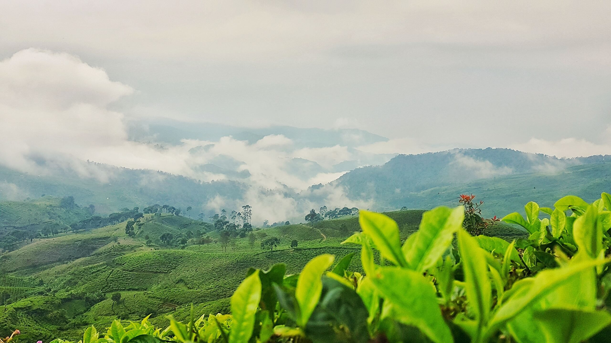
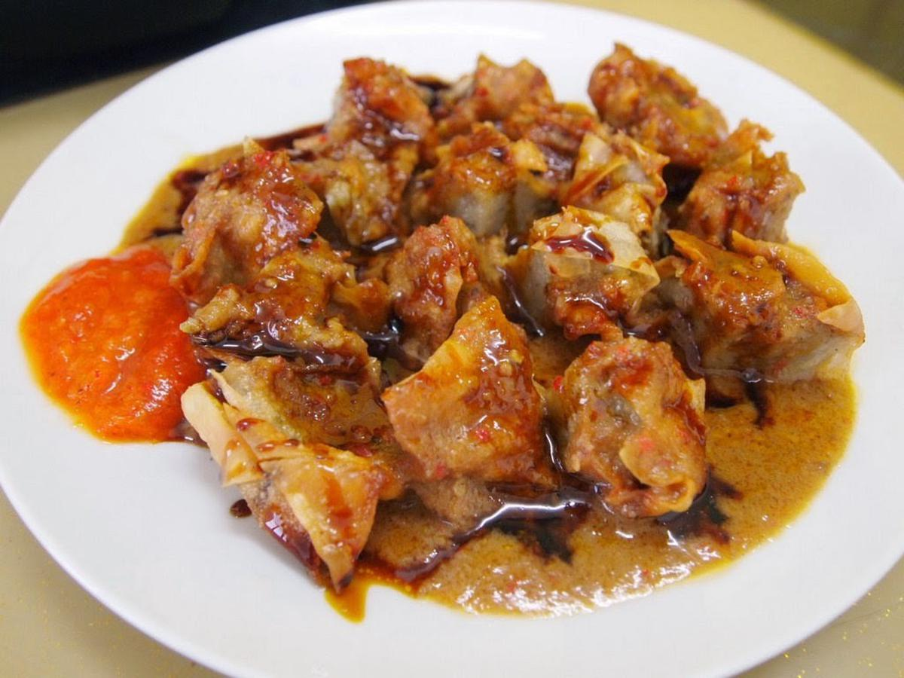
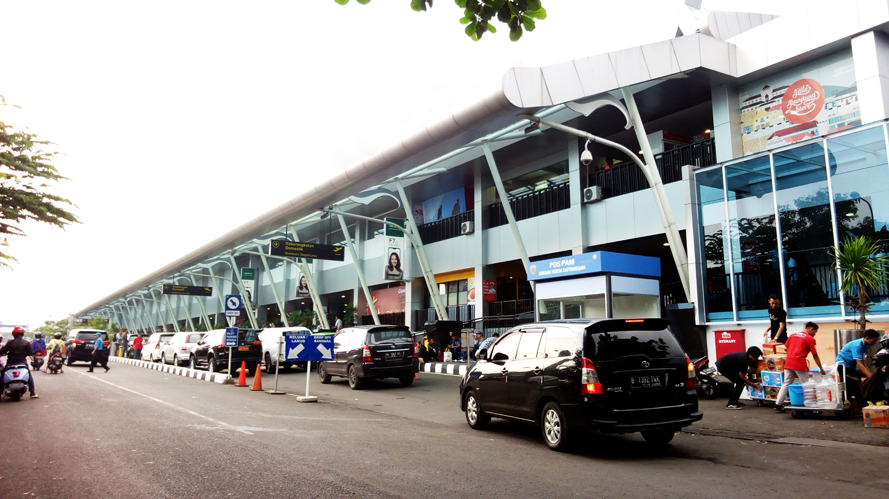

Bandung memiliki sejuta pesona yang selalu membuat wisatawan terpana. Bagaimana tidak? Mulai dari tempat wisata berbasis alam, destinasi rekreasi kekinian, hingga kuliner dan tren fesyen bisa Sobat Pesona temui semua di Ibu Kota Jawa Barat ini. Saking idealnya, Bandung seringkali menjadi destinasi tujuan rekreasi singkat di hari libur maupun akhir pekan. Baik bersama teman, keluarga, atau sendirian, selalu ada tempat seru dan menyenangkan yang bisa ditelusuri di Kota Bandung.
Kekayaan alam Bandung tak pernah mengecewakan
Suasana sejuk dan pemandangan hijau di berbagai sudut dataran tinggi di Bandung sangat cocok jadi tempat rileksasi pikiran. Sobat Pesona bisa mencoba berkunjung ke kebun teh asri di kawasan Ciwidey dan menikmati udara segar dengan bebas. Kalau mau destinasi yang lebih hits, menelusuri setiap sisi hutan pinus di Cikole yang cantik nan instagenic adalah jawabannya, Sobat Pesona! Selain itu, ada pula glamping seru dengan pilihan panorama alam yang menakjubkan, seperti di Lakeside Rancabali, The Lodge Maribaya, dan Trizara Resort.
Yang tak boleh ketinggalan, apalagi kalau bukan wisata alam ke Gunung Tangkuban Perahu. Ya! Sobat Pesona harus menyaksikan keindahan kawah yang erat kaitannya dengan cerita rakyat Jawa Barat berjudul Sangkuriang itu. Menurut alkisah, bentuk Gunung Tangkuban perahu yang terlihat seperti gunung terbalik ini berasal dari perahu buatan Sangkuriang yang menjadi syarat untuk bisa menikahi gadis tercantik yang ternyata adalah sang ibunda, Dayang Sumbi. Namun syarat itu gagal terpenuhi hingga Sangkuriang menendang perahu tersebut hingga terbalik dan menurut cerita itu lah awal terciptanya Gunung Tangkuban Perahu.
Pusat wisata, kuliner dan fesyen yang tiada duanya
Kalau Sobat Pesona yang ingin mencari spot foto yang manis dan penuh warna pastel yang kekinian, kunjungi saja Rabbit Town! Selain itu ada pula Bandung Amazing Art World yang menyediakan latar foto instagrammable dengan efek 3D hingga wahana Dunia Terbalik nan unik.
Untuk lokasi untuk berswafoto yang unik, maka kota ini cocok jadi tempat yang sangat tepat! Untuk Sobat Pesona wajib banget mengunjungi Tebing Keraton atau The Royal (Palace) Cliff, Puncak Bukit Moko, Eurad Highland Lembang, atau Stone Garden Citatah. Nah, di Lembang juga ada pula atraksi tematis yang menarik dijelajahi tepatnya di Farm House, dan De Ranch yang hadir dengan nuansa koboi.
Mengunjungi Bandung yang cukup kental dengan budaya dan adat Sunda juga bisa menciptakan pengalaman seru mengenal musik, tarian, dan budayanya di Saung Angklung Udjo atau Rumah Angklung Udjo. Destinasi yang mengemas berbagai unsur tradisional ini sayang banget bila dilewatkan. Sobat Pesona bisa menonton orkestra anak-anak dengan instrumen tradisional atau menyaksikan penampilan tarian tradisional dan pertunjukan musik khas Sunda. Di tempat ini, pengunjung pun bisa turut serta menjadi bagian dari orkestra angklung sembari belajar memainkan alat musik tradisional yang satu ini.
Saat sudah puas berjalan-jalan, kini waktunya wisata kuliner, Sobat Pesona! Ada banyak makanan khas Bandung yang eksistensinya kini semakin meroket. Sebut saja aneka olahan aci seperti, baso aci, seblak, cimol, hingga cilok. Kudapan lain dengan bumbu kacang yang gurih juga cocok untuk mengganjal perut lho, misalnya batagor, siomay, kupat tahu, karedok, atau lotek. Kalau mencari hidangan malam yang menggoyang lidah, iga bakar, cuanki, dan mie kocok khas Bandung wajib masuk dalam daftar pilihan, nih!
Sementara untuk tren fesyen, kota yang dijuluki Paris Van Java ini jelas tak ada duanya. Ada banyak factory outlet dan distro yang hadir di sepanjang jalan utama Dago (sekarang disebut Jalan Ir. H. Juanda), di sepanjang Jalan Riau (secara resmi dikenal sebagai Jalan RE Martadinata), atau dalam perjalanan ke Lembang di Jalan Setiabudi.
Jika Sobat Pesona ingin mencari ragam bahan tekstil yang terjangkau, maka Sobat Pesona harus pergi ke Pusat Perdagangan Pasar Baru, di sana Sobat Pesona bisa mendapatkan bahan kain yang berkualitas dengan harga terjangkau dalam jumlah yang banyak.
Untuk lokasi untuk berswafoto yang unik, maka kota ini cocok jadi tempat yang sangat tepat! Untuk Sobat Pesona wajib banget mengunjungi Tebing Keraton atau The Royal (Palace) Cliff, Puncak Bukit Moko, Eurad Highland Lembang, atau Stone Garden Citatah. Nah, di Lembang juga ada pula atraksi tematis yang menarik dijelajahi tepatnya di Farm House, dan De Ranch yang hadir dengan nuansa koboi.
Akses ke Bandung
Bandara Internasional Husein Sastranegara di Bandung menghubungkan Indonesia dengan sejumlah negara tetangga seperti, Air Asia yang melayani penerbangan langsung dari Kuala Lumpur di Malaysia serta Singapura ke Bandung. Silk Air juga beroperasi untuk Singapura ke Bandung dan Malindo Air juga beroperasi dari Kuala Lumpur ke Bandung. Pada penerbangan domestik, tersedia penerbangan langsung dari Jakarta, Surabaya, Semarang, Bandar Lampung, Bali, Surakarta, Pekanbaru, Banjarmasin, Kualanamu (Sumatera Utara), Palembang, Pontianak, Yogyakarta, Balikpapan, Batam, Makassar, dan Pangkal Pinang.
Atau Sobat juga bisa mendarat di Bandara Internasional Kertajati di Majalengka sebagai alternatif jalur udara yang lain. Perjalanan dari Bandara ini bisa dilanjutkan via jalur darat dengan perkiraan 2,5 jam lewat tol hingga sampai ke Bandung.
Dari Ibu Kota Jakarta, Bandung juga dapat diakses melalui jalan tol yang memungkinkan Sobat Pesona untuk sampai hanya dalam waktu tempuh 2,5-3 jam perjalanan, sesuai kondisi kepadatan jalur lalu lintas. Selain dengan mobil, ada sejumlah layanan minibus shuttle di berbagai titik di Jakarta yang akan membawa Sobat Pesona langsung ke Bandung dengan fasilitas yang menyenangkan.
Bandung juga memiliki berbagai pilihan akomodasi. Mulai dari hostel hingga hotel mewah, bisa Sobat Pesona pesan dengan mudah melalui agen perjalanan.